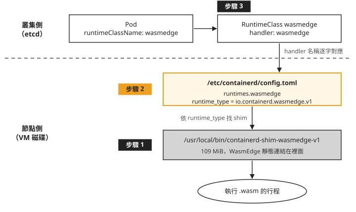
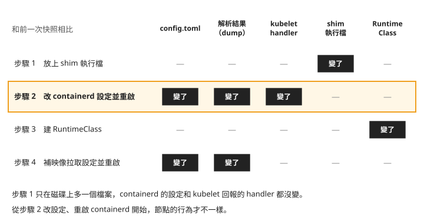
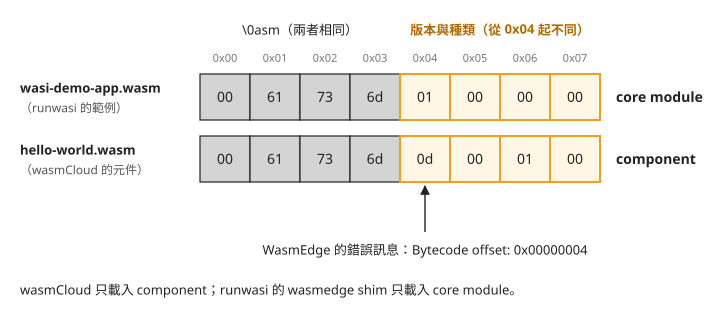

Day 4: WasmEdge 與 runwasi——在節點上裝 shim、改 containerd 設定，以及兩種 wasm 格式¶
假設你手上有一支編成 wasm 的小程式，想讓它在現有的 AKS 叢集上跑，排程、log、kubectl 都照一般 pod 的方式用，不想像 Day 2–3 的 wasmCloud 那樣另外學一套 host 和 CRD。上網找「WasmEdge Kubernetes」，會找到三種做法：AKS 的 --workload-runtime WasmWasi、WasmEdge 官網用 crun 的教學，以及 containerd 底下的 runwasi 專案。AKS 的 WASI node pool 已退場；crun 是另一套容器執行期，官網那份舊教學本課沒有驗證。第三種已有實測，但要你自己進到節點上，放一個執行檔、改 containerd 的設定檔、重啟 containerd。
這一章走第三種做法，在 AKS 節點上把 WasmEdge 接上 Kubernetes。每做完一步，就把節點的狀態和開始前比一次，找出節點是從哪一步開始改變行為的。最後拿 wasmCloud 用的那支程式交給 WasmEdge 跑，看「編成 wasm」是不是等於兩邊都能跑。
讀完之後，一顆指定 WasmEdge 的 pod 起不來時，你能分辨是節點還沒接上 shim、映像沒有被解開，還是 wasm 檔本身是另一種格式。
WasmEdge 要怎麼接上 Kubernetes¶
WasmEdge 是一個 wasm 執行期：它讀進一個 .wasm 檔，然後執行裡面的程式。Kubernetes 不會直接呼叫它。Day 1 追過那條鏈：kubelet 把 pod 交給 containerd，containerd 依 pod 指定的 handler 找到設定檔裡對應的一段，再啟動一個 shim（每個容器各一個、負責實際啟動與看管容器的小程式）。一般容器用的是節點內建的 containerd-shim-runc-v2。
runwasi 是 containerd 底下的專案，它把 wasm 執行期包成 containerd 認得的 shim。今天用的是它發佈的 containerd-shim-wasmedge-v1 v0.6.1，需要的 WasmEdge 程式庫也一起編進這個執行檔，稱為靜態連結。Day 1 那條鏈換成 WasmEdge 版，長這樣：
把這條鏈畫成圖，上半部存在叢集（etcd）裡，下半部在每一台節點的磁碟上。圖上的「步驟 1–3」是本章依序要加上去的東西：

圖中的設定範圍與作用如下：
- 下半部的兩樣東西（shim 執行檔、config.toml 的那一段）都在節點上，每一台要跑 wasm 的節點都得各做一次。上半部的 RuntimeClass 只要在叢集建一次。
- 中間那段設定是唯一會讓 containerd 改變行為的地方。後面每一步都會比對節點，看這件事是不是真的。
另外兩種做法為什麼不用¶
AKS 自己的 WASI node pool 已經退役，Day 1 對它下過指令，拿到的是 InvalidWorkloadRuntimeSettingError。az 的 --help 和訂閱層的 feature flag 到現在都還列著它，不能拿來判斷這個功能還在不在，見疑難排解：--help 和 feature flag 都說有。
WasmEdge 的 containerd 整合文件轉介到 runwasi，本章採用這條路，透過 shim 接上節點既有的 containerd。
節點上原本有什麼¶
動手之前先確認 AKS 的節點上沒有任何 wasm 執行期，免得裝了兩份互相干擾。下面是節點檢查的結果節錄，逐一 command -v 是摘要；實際可逐一輸入 command -v crun 等命令。進節點的方式沿用 Day 1 的 node-shell：
$ containerd --version
containerd github.com/containerd/containerd/v2 2.3.3-2
$ (逐一 command -v)
crun / youki / wasmedge NOT FOUND
containerd-shim-wasmedge-v1 / -wasmtime-v1 NOT FOUND
containerd-shim-spin-v2 / -slight-v1 NOT FOUND
$ find /usr /opt /var/lib -maxdepth 4 -type f -name "*wasm*"
/usr/share/mime/application/wasm.xml ← 命中數 1
$ find /usr/bin /usr/local/bin -maxdepth 1 -type f | wc -l
947
所有 wasm 相關的執行檔都是 NOT FOUND，搜尋範圍內只找到一個 MIME 類型定義檔。
再看 /etc/containerd/ 底下：只有 config.toml 與 kubenet_template.conf，沒有放額外設定檔的子目錄，config.toml 裡也沒有 imports。所以要加 handler，就只能直接改 config.toml 這一個檔。
開始之前：存一份節點快照¶
這一章要回答「節點從哪一步開始不一樣」，所以每一步前後都要取同樣的五份資料來比。Day 2 證明 wasmCloud 沒動節點，用的也是這五份：
| 快照 | 看什麼 |
|---|---|
config.toml |
節點上的 containerd 設定檔原文 |
| config dump | 目前設定檔經 containerd 解析、展開的內容 |
| runtimeHandlers | kubelet 回報這台節點有哪些 handler |
| shim 清單 | 磁碟上有哪些 runtime 與 shim 執行檔 |
| RuntimeClass | 叢集裡有哪些 RuntimeClass |
第二份要特別說明。containerd config dump 讀取目前設定檔並補上預設值，不會向執行中的服務查詢。它能用來檢查設定是否可被解析；要確認服務已載入，還要在重啟後檢查 runtimeHandlers 與實際 Pod。
本章假設叢集只有 system pool 的一台節點，.items[0] 都指它。node-shell 是 Day 1 建的 DaemonSet；先確認目前節點上的 Pod 已就緒，並依 Day 1 查出 NODE_SHELL_POD。下面這個函式取一次五份快照，參數是檔名前綴：
nodesh() { kubectl -n wasmlab exec "$NODE_SHELL_POD" -- nsenter -t 1 -m -- "$@"; }
snap() {
nodesh cat /etc/containerd/config.toml > "$1-containerd-config.toml"
nodesh containerd config dump > "$1-containerd-config-dump.toml"
kubectl get node -o jsonpath='{.items[0].status.runtimeHandlers}' \
| python3 -m json.tool > "$1-node-runtimehandlers.json"
nodesh sh -c 'ls -l /usr/bin/runc /usr/bin/crun /usr/bin/containerd-shim-runc-v2 \
/usr/bin/containerd-shim-wasmedge-v1 /usr/bin/containerd-shim-wasmtime-v1 \
/usr/local/bin/containerd-shim-wasmedge-v1 /usr/local/bin/crun 2>/dev/null || true' \
| tr -s ' ' > "$1-shim-binaries.txt"
kubectl get runtimeclass -o custom-columns='NAME:.metadata.name,HANDLER:.handler' \
--no-headers | sort | tr -s ' ' > "$1-runtimeclasses.txt"
}
snap s0-baseline
ls -l 使用執行檔的完整路徑，避免模糊比對混入其他檔案。之後每一步做完就 snap s1-…、snap s2-…，再用 diff 逐份比對前一次。
步驟 1：把 shim 放上節點¶
先在自己的電腦上下載 release，確認雜湊值和 release 附的 SHA256SUMS 相同：
V=https://github.com/containerd/runwasi/releases/download/containerd-shim-wasmedge/v0.6.1
curl -sLO $V/containerd-shim-wasmedge-x86_64-linux-musl.tar.gz
shasum -a 256 containerd-shim-wasmedge-x86_64-linux-musl.tar.gz
curl -sL $V/SHA256SUMS
$ shasum -a 256 containerd-shim-wasmedge-x86_64-linux-musl.tar.gz
99f7f56c64a0524ea1ec3922cd095b108825a513d0212db75a5dfb08ba196cce
$ curl -sL …/SHA256SUMS
99f7f56c64a0524ea1ec3922cd095b108825a513d0212db75a5dfb08ba196cce … ← 相符
兩邊的值相同，再讓節點自己下載同一個檔案。進到節點的 shell，在一個暫存目錄裡下載、解開，把執行檔裝進 /usr/local/bin：
kubectl -n wasmlab exec -it "$NODE_SHELL_POD" -- nsenter -t 1 -m -- bash
# inside the node
cd "$(mktemp -d)"
V=https://github.com/containerd/runwasi/releases/download/containerd-shim-wasmedge/v0.6.1
curl -sLO $V/containerd-shim-wasmedge-x86_64-linux-musl.tar.gz
tar -xzf containerd-shim-wasmedge-x86_64-linux-musl.tar.gz
$ install -m 0755 containerd-shim-wasmedge-v1 /usr/local/bin/
-rwxr-xr-x 1 root root 114524904 /usr/local/bin/containerd-shim-wasmedge-v1
$ /usr/local/bin/containerd-shim-wasmedge-v1 -v
Runtime: wasmedge Version: 0.6.1 Revision: 5a8fc8e9ee0df28
壓縮檔 37.3 MiB，解開後是 109 MiB。節點原有的 containerd-shim-runc-v2 是 8.4 MiB，這一個大了 13 倍，因為整個 WasmEdge 執行期都靜態連結在裡面。
回到定義 snap 的本機終端機，取第二次快照（snap s1-shim-installed），和開始前比：
containerd-config.toml IDENTICAL
containerd-config-dump.toml IDENTICAL
node-runtimehandlers.json IDENTICAL
runtimeclasses.txt IDENTICAL
shim-binaries.txt DIFFERS
> -rwxr-xr-x 1 root root 114524904 /usr/local/bin/containerd-shim-wasmedge-v1
五份裡只有 shim 清單多了一行。containerd 的設定、kubelet 回報的 handler 都沒變：磁碟上多了一個執行檔，但還沒有任何設定指向它，containerd 不會去用它。
步驟 2：在 containerd 設定裡加一個 handler¶
要讓 containerd 用這個 shim，就要在 config.toml 加一段 runtimes.wasmedge，這段的名字 wasmedge 就是之後 RuntimeClass 要寫的 handler。
先決定 plugin 路徑¶
Day 1 比較過新舊 plugin 路徑。containerd 2.x 能遷移完整的 version 2 設定，但本課 AKS 檔案已使用新 plugin 名稱，額外加入舊路徑時未得到預期 handler，見 Day 1 的設定路徑檢查。這台節點是 containerd 2.3.3，照理該用 2.x 路徑。麻煩的是 runwasi 自己的資料就有兩種寫法。它的 quickstart 文件寫的是 2.x 路徑：
# runwasi 的文件(quickstart.md)——containerd 2.x 的路徑
[plugins."io.containerd.cri.v1.runtime".containerd.runtimes.wasm]
同一個 tag 裡，它自己的 CI 用的 kind 節點映像是 Kubernetes v1.29.1，寫的是 1.x 路徑：
# 同一個 tag 裡,runwasi 自己的 CI(test/k8s/Dockerfile,kind v1.29.1)——1.x 的路徑
[plugins."io.containerd.grpc.v1.cri".containerd.runtimes.wasm]
網路上的範例兩種都有。與其改了節點、重啟之後才知道對不對，不如先在副本上確認。containerd -c <檔案> config dump 會讀指定的設定檔、印出有效設定，但不啟動任何東西，不影響正在跑的 containerd。在節點上把 config.toml 複製兩份，各加上一種寫法：
# inside the node, in a scratch directory
cp /etc/containerd/config.toml cfg-1x.toml
cat >> cfg-1x.toml <<'EOF'
[plugins."io.containerd.grpc.v1.cri".containerd.runtimes.wasmedge]
runtime_type = "io.containerd.wasmedge.v1"
EOF
cp /etc/containerd/config.toml cfg-2x.toml
cat >> cfg-2x.toml <<'EOF'
[plugins."io.containerd.cri.v1.runtime".containerd.runtimes.wasmedge]
runtime_type = "io.containerd.wasmedge.v1"
EOF
containerd -c cfg-1x.toml config dump | grep -n wasmedge
containerd -c cfg-2x.toml config dump | grep -n wasmedge
再把兩份的有效設定行數、命中行，以及和沒加任何東西的基準比對的結果整理在一起（下面輸出裡副本放在 /tmp/，檔名是自己取的）：
$ containerd -c /tmp/cfg-1x.toml config dump # io.containerd.grpc.v1.cri…runtimes.wasmedge
有效設定行數: 308
命中 wasmedge 的行數: 0
與未加任何東西的基準相比: IDENTICAL
$ containerd -c /tmp/cfg-2x.toml config dump # io.containerd.cri.v1.runtime…runtimes.wasmedge
有效設定行數: 323
111: [plugins.'io.containerd.cri.v1.runtime'.containerd.runtimes.wasmedge]
112: runtime_type = 'io.containerd.wasmedge.v1'
加入 1.x 路徑的副本解析後，wasmedge 設定沒有出現在有效設定裡，containerd 未針對被忽略的設定發出警告。stderr 有一則設定從 version 2 遷移的警告，與這段設定被忽略是兩件事。這份有效設定共 308 行，與基準逐字相同；2.x 寫法則出現在有效設定的第 111–112 行。
在這台 containerd 2.3.3 節點的有效設定裡，io.containerd.grpc.v1.cri 仍存在，但只剩 streaming server 的欄位，runtime 設定已移到 io.containerd.cri.v1.runtime。因此，搜尋到舊 plugin 名稱，不代表 runtimes.wasmedge 已生效。以下節錄舊 plugin 的有效設定：
[plugins.'io.containerd.grpc.v1.cri']
disable_tcp_service = true
stream_server_address = '127.0.0.1'
… ← runtimes 已經搬走了
對加入舊路徑的副本執行 containerd config migrate，輸出雖然從 version 2 轉成 version 4，仍沒有 wasmedge 設定。套用前要在副本的 config dump 裡確認完整的 handler 設定，再依下一節重啟 containerd。
套用設定，讓 containerd 重新讀取¶
確定用 2.x 路徑之後，先把節點的 config.toml 複製一份備份，再把 cfg-2x.toml 裡加的那三行（一行空白、兩行設定）附加到 /etc/containerd/config.toml 結尾。
containerd 要重新讀設定才會生效。三種常見的做法，只有一種有用：
$ systemctl reload containerd
Failed to reload containerd.service: Job type reload is not applicable for unit containerd.service.
$ kill -HUP $(pidof containerd)
$ kubectl get node -o jsonpath='{…runtimeHandlers}'
['', 'runc', 'untrusted'] ← SIGHUP 沒有讓新 runtime 生效
$ systemctl restart containerd
$ kubectl get node -o jsonpath='{…runtimeHandlers}'
['', 'runc', 'untrusted', 'wasmedge'] ← 生效
reload 直接被 systemd 拒絕；送 SIGHUP 不會顯示錯誤，但 handler 清單沒變；systemctl restart 之後，kubelet 回報的清單才多了 wasmedge。
重啟 containerd 聽起來會影響節點上所有的容器。實際比對重啟前後全叢集 pod 的 RESTARTS，再看節點的 Ready 狀態：
$ diff pods-pre-restart.txt pods-post-restart.txt
IDENTICAL——21 個 pod,沒有任何一個被重建或重啟
$ kubectl get node -o jsonpath='{…conditions[?(@.type=="Ready")]}'
True lastTransition=07:17:03Z ← 早於 07:24:37 的重啟,節點沒掉出 Ready
沒有任何 pod 重啟，Ready 最後一次變化的時間也在重啟之前。原因是每個容器都由自己的 shim 行程看管，shim 不是 containerd 的子行程，而 containerd 的 systemd unit 設定的是 KillMode=process，重啟時只停掉 containerd 主行程本身。
第二次比對¶
取快照 snap s2-containerd-configured，和上一次比：
containerd-config.toml DIFFERS
> [plugins."io.containerd.cri.v1.runtime".containerd.runtimes.wasmedge]
> runtime_type = "io.containerd.wasmedge.v1"
containerd-config-dump.toml DIFFERS(新增 15 行,containerd 把預設值全部展開)
node-runtimehandlers.json DIFFERS
> "name": "wasmedge"
> "features": { "recursiveReadOnlyMounts": false, "userNamespaces": false }
shim-binaries.txt IDENTICAL
runtimeclasses.txt IDENTICAL
這次設定檔、有效設定、handler 清單三份都變了。設定檔只加兩行，有效設定卻多 15 行，是 containerd 把這個 runtime 的所有預設欄位都展開了。
看 handler 那兩個 features：它們是 kubelet 向 runtime 問來的能力，分別表示這個 handler 支不支援遞迴的唯讀掛載、支不支援 Pod 的 user namespace。runc 兩項都是 true，wasmedge 兩項都是 false。Day 8 整理 wasm 工作負載用不到哪些 Pod 功能時，會再回到這裡。
步驟 3：建 RuntimeClass¶
最後一塊在叢集這一側。handler 要逐字等於上一步 config.toml 裡 runtimes. 後面的名字，不是 runtime_type：
cat > runtimeclass-wasmedge.yaml <<'EOF'
apiVersion: node.k8s.io/v1
kind: RuntimeClass
metadata:
name: wasmedge
handler: wasmedge # must match runtimes.<name> in config.toml, NOT runtime_type
EOF
第三次快照（snap s3-runtimeclass）只有 RuntimeClass 清單多一行，節點上的四份都和上一次相同。RuntimeClass 存在 etcd 裡，建它不會動到節點，也就是 Day 1 那條鏈的叢集側。
步驟 4：跑第一顆 wasm pod¶
用 runwasi 提供的範例映像 wasi-demo-app。這個映像的進入點已經是 /wasi-demo-app.wasm，args 只要給它的子命令與參數：
cat > pod-runwasi-demo.yaml <<'EOF'
apiVersion: v1
kind: Pod
metadata:
name: wasmedge-runwasi-demo
namespace: wasmlab
spec:
runtimeClassName: wasmedge
restartPolicy: Never
containers:
- name: demo
image: ghcr.io/containerd/runwasi/wasi-demo-app:latest
args: ["echo", "hello-from-wasmedge"]
EOF
kubectl apply -f pod-runwasi-demo.yaml
$ kubectl -n wasmlab get pod wasmedge-runwasi-demo
NAME READY STATUS AGE
wasmedge-runwasi-demo 0/1 CreateContainerError 25s
Events:
Normal Pulled Successfully pulled image … Image size: 2265395 bytes.
Warning Failed Error: failed to create containerd container:
parent snapshot sha256:5e274030… does not exist: not found
映像拉成功了，shim 和 handler 也都在，卻停在 CreateContainerError，訊息說某個 snapshot 不存在。snapshot 是 containerd 把映像的一層層 layer 解開之後的檔案系統，容器啟動時就以它當根目錄。訊息的意思是：這個映像的 layer 沒有被解開。
用 ctr 直接問節點上的 containerd：
$ ctr -n k8s.io images ls | grep wasi-demo-app
…runwasi/wasi-demo-app:latest 2.2 MiB wasip1/wasm io.cri-containerd.image=managed
^^^^^^^^^^^
$ ctr -n k8s.io snapshots ls | wc -l
265
$ ctr -n k8s.io snapshots ls | grep 5e274030
（無輸出——265 個 snapshot 裡沒有這一個,layer 從來沒有被解開）
看 PLATFORMS 欄。每個映像都會標明它是給哪個平台（作業系統與 CPU 架構的組合）用的，一般容器映像是 linux/amd64，這個映像標的是 wasip1/wasm。節點的 containerd 只替符合本機平台 linux/amd64 的映像解開 layer，其他平台的映像，下載下來的內容存著，但不會解開成 snapshot。所以 shim 要去 rootfs 裡讀 .wasm，讀不到。錯誤訊息只說 snapshot 不存在，完全沒提平台，要自己看 PLATFORMS 欄才知道。
讓 containerd 解開 wasm 平台的映像¶
containerd 的映像設定裡有一個 runtime_platforms，名字看起來就是為這件事設計的。只加它的結果是這樣：
# 岔路:runtime_platforms,名字看起來完全就是為這件事準備的
[plugins."io.containerd.cri.v1.images".runtime_platforms.wasmedge]
platform = 'wasip1/wasm' ← 設定確實進了有效設定
套用、重啟、重拉,行為一模一樣
設定有進到有效設定裡，但 pod 還是同一個錯誤。要再加同一段設定裡的另一個欄位：
[plugins."io.containerd.cri.v1.images"]
use_local_image_pull = true # default false → CRI hands pulling to the transfer
# service, which ignores runtime_platforms
這個欄位預設是 false，此時 Kubernetes 要求拉映像時，containerd 把工作交給另一個負責下載的元件（transfer service），而那個元件不看 runtime_platforms。改成 true 之後，拉映像改由 Kubernetes 介面（CRI）這一側自己處理，runtime_platforms 才有作用。
要注意寫的位置：config.toml 裡已經有 [plugins."io.containerd.cri.v1.images"] 這一段，use_local_image_pull = true 要加在這一段的標題底下，不要在檔尾再寫一次同樣的段落標題。runtime_platforms 那一段則附加在檔尾：
[plugins."io.containerd.cri.v1.images".runtime_platforms.wasmedge]
platform = "wasip1/wasm"
snapshotter = "overlayfs"
改完之後，在節點 shell 執行 systemctl restart containerd。回本機刪除 wasmlab 裡的 wasmedge-runwasi-demo Pod；再到節點 shell 用 ctr -n k8s.io images rm ghcr.io/containerd/runwasi/wasi-demo-app:latest 移除這個測試映像的快取。最後回本機重新執行 kubectl apply -f pod-runwasi-demo.yaml，讓 kubelet 重拉映像並建 Pod。成功後查看 Pod log：
pod 跑完、狀態是 Completed，log 是預期的兩行。WasmEdge 在 AKS 上跑起來了。
本課驗證過能跑的設定是 use_local_image_pull 和 runtime_platforms 兩段都加，照這份做就好。「只加 use_local_image_pull 夠不夠」本課沒有拆開驗證；想精簡設定，先在測試節點拿掉 runtime_platforms 試一次。這個問題的完整整理見疑難排解：pod 停在 parent snapshot … does not exist。
use_local_image_pull 會影響整台節點
它改的是這台節點上所有映像的拉取路徑，不只 wasm 映像。對一般容器映像的拉取行為、速度、registry 鏡像設定有沒有影響，本課沒有測。要用在正式環境的節點上，先在測試節點觀察一般映像的拉取。
節點從哪一步開始不一樣¶
把四個步驟各自造成的變化放在一起（步驟 4 的快照是 snap s4-image-pull-fixed）。每一列是一個步驟，每一欄是一份快照，「變了」表示這一步做完之後，那份和前一次不同：

照著圖由上往下看：
- 步驟 1 雖然在節點上放了 109 MiB 的執行期，containerd 的設定和 kubelet 看到的 handler 都沒變。評估風險時，「複製一個檔案」和「改變節點行為」要分開看。
- 節點的行為從步驟 2 開始改變，也就是改
config.toml並重啟 containerd 的那一步。
和 Day 1 的節點基準相比，全部做完之後節點累計多了這些東西：
| 項目 | 相對 Day 1 基準的變化 |
|---|---|
/etc/containerd/config.toml |
8 行新增、0 行移除 |
containerd config dump |
21 行新增、1 行變更 |
kubelet 的 runtimeHandlers |
多一個 wasmedge(兩項 feature 皆 false) |
/usr/local/bin |
多一個 109 MiB 的 shim |
| RuntimeClass | 多一個(在 etcd,不在節點) |
| containerd 重啟 | 2 次,pod 零重啟、節點沒掉出 Ready |
對照另外兩條路：Day 2 的 wasmCloud 五份快照完全沒變；WasmEdge 要在每台節點加 8 行設定和一個 shim 執行檔；Day 6 的 SpinKube 會改用 operator 替你做類似的事。
同一支 wasm 程式，兩邊都能跑嗎¶
到這裡，叢集上同時有 Day 2–3 的 wasmCloud 和今天的 WasmEdge。直覺上，程式編成 wasm 之後，交給哪個 wasm 執行期都能跑。下面拿兩邊現成的映像來試。
三份映像的打包方式¶
先看映像在 registry 上怎麼打包。每個 OCI 映像都有一份 manifest，列出一份設定（config）和幾層內容（layer），各自用 mediaType 標明是什麼格式。下面是三份映像的 manifest 內容，第一份是 Day 2 用的 wasmCloud 範例，後兩份是 runwasi 的範例：
--- wasmcloud/components/hello-world:0.1.0
config.mediaType = application/vnd.wasm.config.v0+json (469 B)
layer[0].mediaType = application/wasm (224241 B)
--- containerd/runwasi/wasi-demo-app:latest
config.mediaType = application/vnd.oci.image.config.v1+json (281 B)
layer[0].mediaType = application/vnd.oci.image.layer.v1.tar (2264576 B)
--- containerd/runwasi/wasi-demo-oci:latest
config.mediaType = application/vnd.oci.image.config.v1+json (320 B)
layer[0].mediaType = application/vnd.bytecodealliance.wasm.component.layer.v0+wasm (2262850 B)
三份的打包都不一樣。wasmCloud 的設定是 wasm 專用的格式，layer 直接就是一個 .wasm 檔；wasi-demo-app 是標準的容器映像，layer 是一個 tar 包；wasi-demo-oci 用標準的容器設定，layer 卻直接放 .wasm。
把後兩份裡的 .wasm 取出來比雜湊值：
$ shasum -a 256 wasi-demo-app.wasm demo-oci.wasm
245c955714067729ab7b3fdd26681caa8bbc5d09ba054a846aa7f5bd9a393f45 wasi-demo-app.wasm
245c955714067729ab7b3fdd26681caa8bbc5d09ba054a846aa7f5bd9a393f45 demo-oci.wasm
兩份是同一支程式，只是打包方式不同。步驟 4 已經跑過 wasi-demo-app；wasi-demo-oci 用同一份 pod 寫法，只把 image 換掉、拿掉 args，pod 名稱改成 wasmedge-runwasi-oci，也跑得起來，log 是一首重複的歌詞。這一組說明：對 WasmEdge 來說，這兩種打包方式都能用。
前 8 個位元組¶
再看檔案本身。三個 .wasm 的前 8 個位元組：
$ xxd -l 8 -g 1 <各檔>
hello-world.wasm 00 61 73 6d 0d 00 01 00 version=0x000d layer=0x0001 → component
wasi-demo-app.wasm 00 61 73 6d 01 00 00 00 version=0x0001 layer=0x0000 → core module
wasi-demo-oci.wasm 00 61 73 6d 01 00 00 00 同上
把兩種開頭並排畫出來：

前四個位元組 00 61 73 6d 是所有 wasm 檔共用的開頭（\0asm）。後四個位元組標示版本與種類，兩種檔案從這裡開始不同：
- core module：
01 00 00 00，最原始的 wasm 格式，也就是 WASI 0.1（wasip1）程式編出來的樣子。 - component：
0d 00 01 00，Day 0 介紹的 Component Model 格式，用 WIT 描述對外的介面，WASI 0.2（wasip2）的程式是這種。
wasmCloud 的 hello-world 是 component，runwasi 的兩個範例是 core module。
把 wasmCloud 的元件交給 WasmEdge¶
把 hello-world:0.1.0 寫進一顆 runtimeClassName: wasmedge 的 pod。只寫 image 時，pod 停在 no command specified：wasmCloud 的映像設定裡沒有 Entrypoint，CRI 不知道要執行什麼。補上 command 之後，容器真的啟動了，接著失敗：
pod-wasmcloud-component-cmd.yaml
cat > pod-wasmcloud-component-cmd.yaml <<'EOF'
apiVersion: v1
kind: Pod
metadata:
name: wasmedge-wasmcloud-cmd
namespace: wasmlab
spec:
runtimeClassName: wasmedge
restartPolicy: Never
containers:
- name: hello
image: ghcr.io/wasmcloud/components/hello-world:0.1.0
command: ["/hello-world.wasm"]
EOF
kubectl apply -f pod-wasmcloud-component-cmd.yaml
$ kubectl -n wasmlab logs wasmedge-wasmcloud-cmd
[error] loading failed: illegal opcode, Code: 0x117
[error] This instruction or syntax requires enabling Component Model proposal
[error] Bytecode offset: 0x00000004
[error] At AST node: component
Bytecode offset: 0x00000004 就是圖上箭頭指的位置：WasmEdge 讀完 \0asm，看到第 5 個位元組是 component 的版本號，就停下來了。第二行訊息也直接說出原因：要開啟 Component Model 才能載入。這兩種失敗的分辨方式，見疑難排解：同一個映像兩種失敗。
本章使用的 wasmedge shim v0.6.1 透過 wasmedge_sdk 的 Module::from_bytes 載入 core module，使用預設設定，沒有啟用 Component Model，也未提供 pod annotation、環境變數或 containerd 設定來啟用。這個限制針對本章採用的 shim 版本；WasmEdge 執行期本身支援 Component Model，不代表這個 shim 能載入 component。
反方向：把 core module 交給 wasmCloud¶
再把 wasi-demo-app 寫成 wasmCloud 的 WorkloadDeployment，交給 Day 2–3 的 host：
wasmcloud-runwasi-core-module.yaml
cat > wasmcloud-runwasi-core-module.yaml <<'EOF'
apiVersion: runtime.wasmcloud.dev/v1alpha1
kind: WorkloadDeployment
metadata:
name: runwasi-core-module
namespace: wasmcloud
spec:
replicas: 1
template:
spec:
hostSelector:
hostgroup: default
components:
- name: runwasi-demo
image: ghcr.io/containerd/runwasi/wasi-demo-app:latest
EOF
kubectl apply -f wasmcloud-runwasi-core-module.yaml
另一份 runwasi-oci-artifact 寫法相同，名稱與 component 名改掉，image 換成 wasi-demo-oci:latest，結果一樣。
$ kubectl -n wasmcloud get workload runwasi-core-module-… -o jsonpath='{.status}'
Sync False "workload is not operational: WORKLOAD_STATE_NOT_FOUND"
Ready False "workload is not placed or not synced"
# 三顆 host 的 log 逐行看
log 共 10 / 14 / 12 行,其中 8 行是 pull_component 的 WARN
提到 runwasi 且含 'Starting workload' 的行數 = 0
對照:同一批 log 裡 blobby / hello-world 的 'Starting workload' = 1 / 2 / 2
Workload 一直不就緒，三顆 host 的 log 裡只有拉取映像的 WARN，沒有任何錯誤，也沒有 Starting workload。Day 3 說過，拉取的 WARN 本身不代表失敗，要看下一行有沒有 Starting workload（Day 3 的「每次拉元件都會噴一行像認證失敗的 WARN」）。這次還要合看 Workload 未就緒、反覆重試、正常元件的對照，以及前面確認的 core module 格式。單憑缺少這一行 log，不能判定其他映像也是格式不相容。
這兩個 WorkloadDeployment 會每 60 秒換一顆 host 重拉映像，看完結果就刪掉：
細節見疑難排解：wasmCloud 收到 core module 時只會重試。
三種打包的差異¶
rootfs 是容器啟動後看見的根檔案系統；OCI manifest 與 config 則記錄映像層及執行設定。
三份映像的差異整理如下：
wasmCloud hello-world |
runwasi wasi-demo-app |
runwasi wasi-demo-oci |
|
|---|---|---|---|
| config mediaType | …vnd.wasm.config.v0+json |
…vnd.oci.image.config.v1+json |
…vnd.oci.image.config.v1+json |
| layer mediaType | application/wasm |
…image.layer.v1.tar |
…wasm.component.layer.v0+wasm |
| layer 大小 | 219 KiB | 2.16 MiB | 2.16 MiB |
architecture / os |
wasm / wasip2 |
wasm / wasip1 |
wasm / wasip1 |
| rootfs | 沒有這個欄位 | diff_ids 有 1 個 |
diff_ids 是空的 |
| 進入點 | 沒有,改成 component.exports/imports 列 WIT 介面 |
Entrypoint |
Entrypoint + containerd.runwasi.layers label |
| wasm 二進位 | component | core module | 同左,SHA256 與左欄相同 |
| 本章成功載入的執行方式 | wasmCloud | wasmedge shim | wasmedge shim |
結果是：兩種打包方式 WasmEdge 都能讀，擋住互通的是 wasm 格式。同一份原始碼要給兩邊跑，就要編兩次：給 WasmEdge 編 wasm32-wasip1 的 core module，給 wasmCloud 編 wasm32-wasip2，Rust 會直接產出 component，不需要固定再做一次 component 轉換。格式符合之後，仍要核對 host 支援的匯入、匯出介面。這個結論是從格式差異推出來的，本章沒有拿同一份原始碼實際編兩次；Day 5 量成本時會自己編。
WasmEdge 這條路適合誰¶
用 Day 0 的方法查這兩個專案時（Day 9 整理成表），WasmEdge 本體很活躍：近 13 週有 291 個 commit，作者分布是本課查過的專案裡最平均的（最近 100 筆裡最多的單一作者占 35 筆，共 12 位）。但讓它接上 Kubernetes 的是 runwasi，情況不同：default branch 最近 8 週沒有任何 commit，最近 100 筆 commit 有一半是 dependabot 的相依套件升級，release notes 裡也還沒有 WASI 0.3。這是課程 2026-08 查核時的歷史活動紀錄。規劃部署時，還要重新確認 runwasi 與選用 shim 版本的維護情況。
所以這條路適合用來學 RuntimeClass、handler、shim 這條執行鏈，每一步都要自己做，每一步的結果也都看得到。既有的程式是 core module、短期不打算改成 component 的話，WasmEdge 的相容性也是優點。若要用於正式環境，這份手動操作還不夠：節點的安裝、設定與移除都要自己寫腳本維護，每換一台節點就要重做一次。
疑難排解¶
--help 和 feature flag 都說 WasmWasi 還在¶
症狀：az aks nodepool add --help 把 WasmWasi 列在 --workload-runtime 的合法值裡，az feature register 註冊 WasmNodePoolPreview 也立刻回 Registered：
$ az aks nodepool add --help
--workload-runtime : Allowed values: KataCcIsolation, KataMshvVmIsolation,
KataVmIsolation, OCIContainer, WasmWasi.
$ az feature register --namespace microsoft.ContainerService --name WasmNodePoolPreview
{ "properties": { "state": "Registered" } } ← 立刻就 Registered
真正建立 node pool 時卻被拒絕：
$ az aks nodepool add … --workload-runtime WasmWasi
ERROR: (InvalidWorkloadRuntimeSettingError) The agent pool wasi1 has a deprecated workload runtime
WasmWasi. WebAssembly System Interface (WASI) node pools (preview) are no longer supported on AKS.
送出到回覆 8 秒,未產生任何資源
原因：這個功能已經退役，但退役只做在 Azure 處理請求的那一端。CLI 的參數清單和訂閱層的 feature flag 定義都沒有跟著拿掉。
修法：先查官方退役公告，不要把 --help 或 feature flag 的狀態當成服務仍可用的證明。本次建立請求被拒絕且沒有建立 node pool，這個結果不能推廣成所有預覽功能請求都不會產生資源。錯誤訊息建議改用 SpinKube，那是本 sprint Day 6–7 的另一條路，不是 WasmEdge 的替代方案。另外，註冊 feature flag 是訂閱層級的變更（Day 1 說明過為什麼不建議），確認用完要 az feature unregister。
pod 停在 parent snapshot … does not exist¶
症狀：shim 裝好、kubelet 也回報了 wasmedge handler，pod 卻是 CreateContainerError，訊息是 parent snapshot sha256:… does not exist: not found，而事件顯示映像拉成功了。
原因：映像的平台是 wasip1/wasm，containerd 預設的拉取路徑不會替非本機平台的映像解開 layer，見步驟 4。錯誤訊息完全沒提到平台。
修法：在 [plugins."io.containerd.cri.v1.images"] 加 use_local_image_pull = true，並加上 runtime_platforms.wasmedge，重啟 containerd、刪掉沒解開的映像再重建 pod。只加 runtime_platforms 沒有效果。追查順序：ctr -n k8s.io images ls 看 PLATFORMS 欄 → ctr -n k8s.io snapshots ls | grep <digest> 確認沒有解開 → containerd config dump 看 use_local_image_pull。
同一個映像出現兩種不同的失敗¶
症狀：把 wasmCloud 的元件交給 WasmEdge，不寫 command 時是 failed to generate spec: no command specified；補上 command 之後，容器啟動了，log 卻是 illegal opcode … Bytecode offset: 0x00000004。
原因：第一種是打包層的問題，wasmCloud 映像的設定裡沒有 Entrypoint 也沒有 Cmd，CRI 產生不出容器規格。第二種才是根本原因：wasm 檔是 component，不是 core module。
修法：看到 no command specified 不要停在「參數沒給對」，補上 command 讓它往下走，才看得到真正的原因。no command specified 是打包層，Bytecode offset: 0x00000004 是格式層。
runwasi 的 wasmedge shim 沒有開 component model¶
症狀：想讓 WasmEdge 載入 component，找不到任何 pod annotation、環境變數或 containerd options 可以打開。
原因：containerd-shim-wasmedge 用的是 wasmedge_sdk 的 Module、Module::from_bytes 這組載入 core module 的 API，設定物件在程式裡寫死成預設值，沒有任何開關。同一個 repo 裡搜尋 component model 相關的設定：
$ grep -rniE "component_model|ComponentModel|enable_component" crates/
containerd-shim-wasmtime/src/instance.rs:69: config.wasm_component_model(true);
containerd-shim-wasmtime/src/instance.rs:141: config.wasm_component_model(true);
containerd-shim-wasmtime/src/tests.rs:333: config.wasm_component_model(true);
三行全部在 wasmtime 的 shim 裡，wasmedge 的 shim 一行都沒有。
修法：WasmEdge 執行期支援 Component Model，不等於 runwasi 的 wasmedge shim 有打開它。runwasi 的 wasmtime shim 有相關實作，但仍要驗證目標映像的打包與匯入介面，本章沒有跑過這項替代方案。這和 Day 3 的「沒有可抽換的 capability provider」是同一類問題：功能在原始碼裡，但你實際跑的那個執行檔沒有啟用它。判斷一個能力能不能用，要看你手上的執行檔，不是看 repo 的功能清單。
wasmCloud 收到 core module 時沒有錯誤，只會一直重試¶
症狀：WorkloadDeployment 的 READY 停在 Unknown，Workload 的 Sync 是 False，訊息只有 WORKLOAD_STATE_NOT_FOUND。三顆 host 的 log 只有拉取映像的 WARN，沒有錯誤，也沒有 Starting workload，每 60 秒換一顆 host 重來一次。
原因：host 拉得到映像，但裡面不是它能載入的 component，而這條路徑不會回報任何錯誤。同一批 log 裡，blobby、hello-world 的 Starting workload 有出現，證明這行 log 沒有被過濾掉。
修法：把沒有 Starting workload 視為追查線索，再比對 Workload 狀態、映像格式與能正常啟動的對照元件；這一行缺席本身不能唯一定位原因。重試會每 60 秒重新拉一次映像，持續產生流量與 log，實驗完用 kubectl -n wasmcloud delete workloaddeployment <名稱> 刪掉。
想一想¶
- 同事在另一座 AKS 叢集照一篇部落格加了 WasmEdge 的 handler，重啟 containerd 之後，
kubectl get node -o jsonpath='{.items[0].status.runtimeHandlers}'裡還是沒有wasmedge，pod 停在no runtime for "wasmedge" is configured。在節點上你會先檢查哪兩件事？ - 一顆
runtimeClassName: wasmedge的 pod 停在CreateContainerError，訊息是parent snapshot … does not exist。另一顆換了映像的 pod 則是容器啟動後Error，log 有Bytecode offset: 0x00000004。這兩顆分別卡在哪一層？各自該怎麼處理？ - 團隊想讓同一份 Rust 程式同時部署到 wasmCloud 和 WasmEdge，有人提議「編一次，打包成兩種映像就好」。依本章的結果，這個做法可行嗎？要怎麼改？
小結¶
WasmEdge 透過 runwasi 的 shim 接上 Kubernetes，要做三件事：把 shim 執行檔放上每一台節點、在 containerd 的 config.toml 用 2.x 路徑加一個 handler 並重啟 containerd、在叢集建一個 handler 名稱相同的 RuntimeClass。節點的行為從改設定那一步開始改變，放執行檔本身不會。設定寫錯路徑時 containerd 不會報錯，所以改節點前先在副本上看有效設定。之後遇到 WasmEdge 的 pod 起不來，依序問三個問題：kubelet 的 runtimeHandlers 裡有沒有這個 handler；映像的平台是不是 wasip1/wasm、layer 有沒有被解開；wasm 檔的第 5 個位元組是 core module 還是 component。
延伸閱讀¶
想再深入，可以從這幾份開始：
- containerd/runwasi —— 本章用的 shim。可以對照看
docs/src/getting-started/quickstart.md（containerd 2.x 路徑）與test/k8s/Dockerfile（1.x 路徑），也就是步驟 2 那兩種寫法的出處。 - containerd 的 CRI 設定文件 ——
use_local_image_pull與runtime_platforms的說明都在這裡，對應步驟 4。 - WasmEdge 的 containerd 整合頁 —— WasmEdge 官方對 containerd 整合的說明，內容轉介到 runwasi。
下一步¶
wasmCloud 和 WasmEdge 兩條路都走過了：wasmCloud 不改節點，WasmEdge 在每台節點加 8 行設定和一個 109 MiB 的 shim。這兩天都還沒量過啟動時間與記憶體，109 MiB 的 shim 跑起來佔多少資源也不知道。Day 5 先確認叢集停機再啟動、節點換成新 VM 之後，今天的節點改動是不是自動消失，再把兩條路的成本量出來。
WasmEdge 標誌為 CNCF(Linux Foundation)官方資產,此處作社群教學用途。